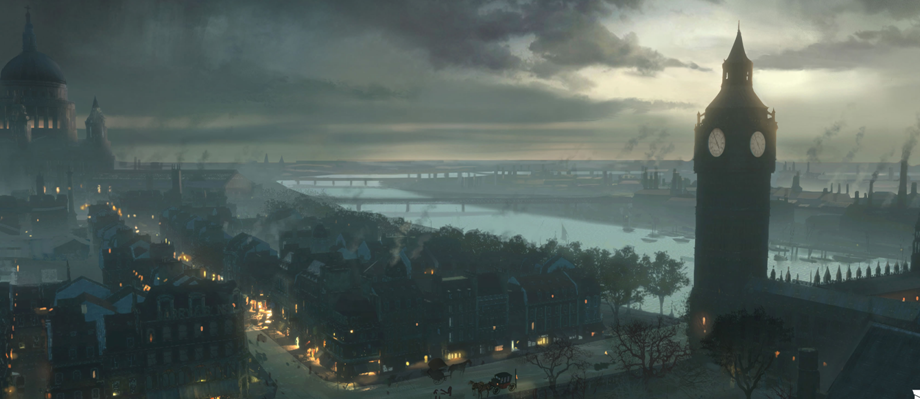

William Shakespeare (1564-1616) foi um dramaturgo e poeta inglês.
Autor de tragédias famosas como "Hamlet", "Otelo", "Macbeth" e "Romeu e Julieta",
foi considerado uma das maiores figuras literárias da língua inglesa.
A arte de poetizar é a capacidade de expressar emoções, visões de mundo e
sensibilidade através da linguagem,
transformando o cotidiano em beleza, reflexão ou crítica social.
Não, Tempo, não zombarás de minhas mudanças
As pirâmides que novamente construíste
Não me parecem novas, nem estranhas;
Apenas as mesmas com novas vestimentas.
